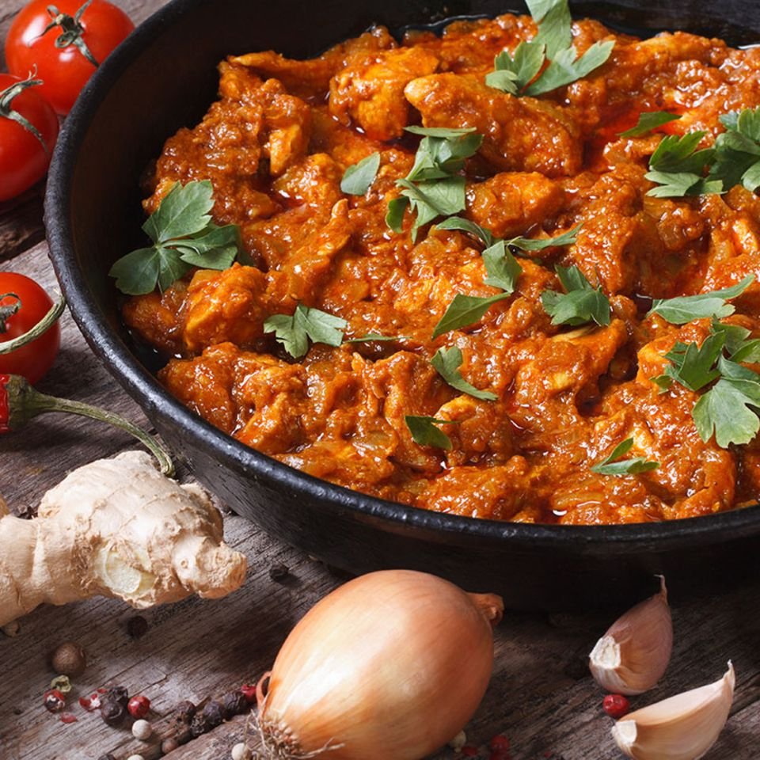

Odin Recipes
Best Dish After School

Description
This am indian dish with seasoned chicken and rice.
This meal is also served with a very tasty sauce.
Ingredients
- chicken
- rice
- Onion
- tomato
- Garlic
- Cream
- Chilli pepper
- Yoghurt
- Coriander
- Black pepper,Salt,Garam masala,Cumin,
Steps
- 1.Take the grinding ingredients in a blender and make it into a smooth puree. Set aside till use.Take the grinding ingredients in a blender and make it into a smooth puree. Set aside till use.
- 2.Heat oil in a pressure cooker. Add in onions, chillies and curry leaves. Saute till the onions turn golden.
- 3.Add in ginger garlic paste and saute for a min.
- 4.n goes salt and all the spice powders. Mix well for 30 sec.
- 5.Add in finely chopped tomatoes and saute for 5 to 7 mins till the tomatoes turn mushy.
- 6.Add in the chicken pieces and toss well with the masala.
- 7.Now cover the pressure cooker, cook for 3 whistle. Simmer the pan for 5 mins. Turn off the heat and let them steam go all by itself.
- 8.Open the cooker and transfer this curry to a pot.
- 9.Add in coconut masala and mix well. Cover this and Boil this for 10 mins or so till the curry thickens like a masala.
- 10.Add in coriander leaves and mix well.
- 11.Serve over rice.